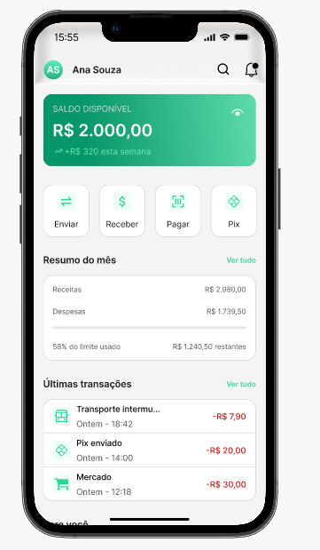
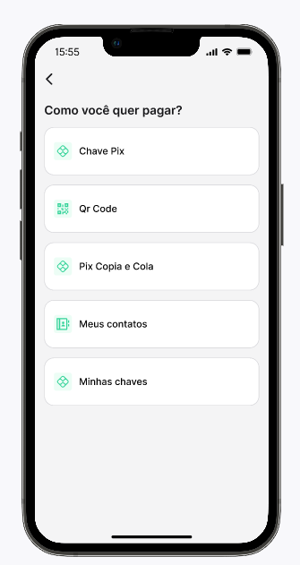
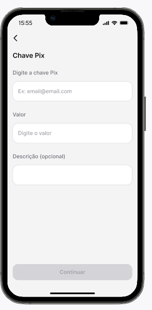
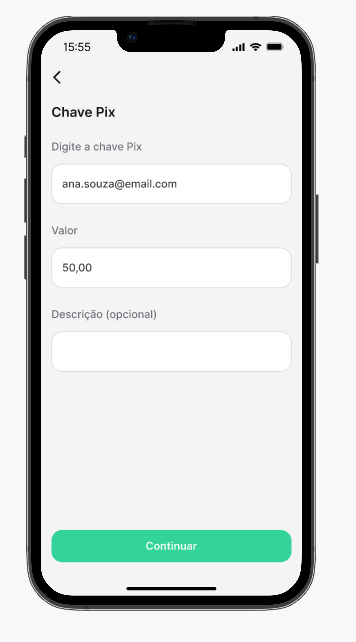
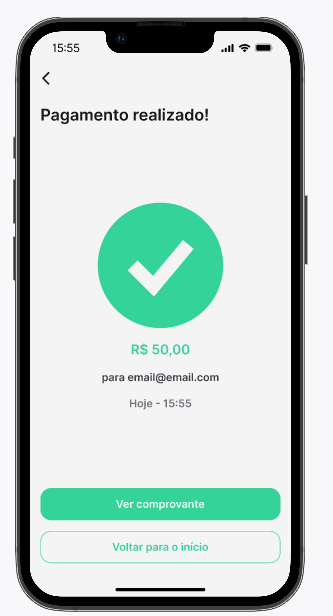

01 — Case Bank
Jornada de Pix + teste de usabilidade no Maze
Protótipo bancário criado no Figma para explorar uma jornada de Pix por chave, com foco em clareza, previsibilidade e facilidade de conclusão.
Objetivo
Validar se o usuário encontra o Pix e conclui a transferência sem depender de instruções passo a passo.
Validação
Missão no Maze + análise de sucesso, misclicks, abandono, tempo e feedback qualitativo.




